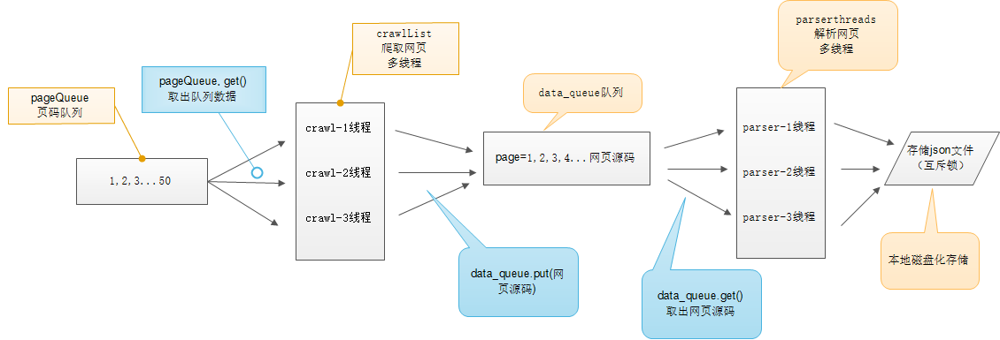

多线程糗事百科案例
案例要求参考上一个糗事百科单进程案例
Queue（队列对象）
Queue是python中的标准库，可以直接import Queue引用;队列是线程间最常用的交换数据的形式
python下多线程的思考
对于资源，加锁是个重要的环节。因为python原生的list,dict等，都是not thread safe的。而Queue，是线程安全的，因此在满足使用条件下，建议使用队列
初始化： class Queue.Queue(maxsize) FIFO 先进先出
包中的常用方法:
Queue.qsize() 返回队列的大小
Queue.empty() 如果队列为空，返回True,反之False
Queue.full() 如果队列满了，返回True,反之False
Queue.full 与 maxsize 大小对应
Queue.get([block[, timeout]])获取队列，timeout等待时间
创建一个“队列”对象
- import Queue
- myqueue = Queue.Queue(maxsize = 10)
将一个值放入队列中
- myqueue.put(10)
将一个值从队列中取出
- myqueue.get()
多线程示意图

# coding=utf-8
import requests
from lxml import etree
import json
from queue import Queue
import threading
class Qiubai:
def __init__(self):
self.headers = {
"User-Agent": "Mozilla/5.0 (Macintosh; Intel Mac OS X 10_12_5) AppleWeb\
Kit/537.36 (KHTML, like Gecko) Chrome/58.0.3029.110 Safari/537.36"}
self.url_queue = Queue() #实例化三个队列，用来存放内容
self.html_queue =Queue()
self.content_queue = Queue()
def get_total_url(self):
'''
获取了所有的页面url，并且返回urllist
return ：list
'''
url_temp = 'https://www.qiushibaike.com/8hr/page/{}/'
url_list = []
for i in range(1,36):
# url_list.append(url_temp.format(i))
self.url_queue.put(url_temp.format(i))
def parse_url(self):
'''
一个发送请求，获取响应，同时etree处理html
'''
while self.url_queue.not_empty:
url = self.url_queue.get()
print("parsing url:",url)
response = requests.get(url,headers=self.headers,timeout=10) #发送请求
html = response.content.decode() #获取html字符串
html = etree.HTML(html) #获取element 类型的html
self.html_queue.put(html)
self.url_queue.task_done()
def get_content(self):
'''
:param url:
:return: 一个list，包含一个url对应页面的所有段子的所有内容的列表
'''
while self.html_queue.not_empty:
html = self.html_queue.get()
total_div = html.xpath('//div[@class="article block untagged mb15"]') #返回divelememtn的一个列表
items = []
for i in total_div: #遍历div标枪，获取糗事百科每条的内容的全部信息
author_img = i.xpath('./div[@class="author clearfix"]/a[1]/img/@src')
author_img = "https:" + author_img[0] if len(author_img) > 0 else None
author_name = i.xpath('./div[@class="author clearfix"]/a[2]/h2/text()')
author_name = author_name[0] if len(author_name) > 0 else None
author_href = i.xpath('./div[@class="author clearfix"]/a[1]/@href')
author_href = "https://www.qiushibaike.com" + author_href[0] if len(author_href) > 0 else None
author_gender = i.xpath('./div[@class="author clearfix"]//div/@class')
author_gender = author_gender[0].split(" ")[-1].replace("Icon", "") if len(author_gender) > 0 else None
author_age = i.xpath('./div[@class="author clearfix"]//div/text()')
author_age = author_age[0] if len(author_age) > 0 else None
content = i.xpath('./a[@class="contentHerf"]/div/span/text()')
content_vote = i.xpath('./div[@class="stats"]/span[1]/i/text()')
content_vote = content_vote[0] if len(content_vote) > 0 else None
content_comment_numbers = i.xpath('./div[@class="stats"]/span[2]/a/i/text()')
content_comment_numbers = content_comment_numbers[0] if len(content_comment_numbers) > 0 else None
hot_comment_author = i.xpath('./a[@class="indexGodCmt"]/div/span[last()]/text()')
hot_comment_author = hot_comment_author[0] if len(hot_comment_author) > 0 else None
hot_comment = i.xpath('./a[@class="indexGodCmt"]/div/div/text()')
hot_comment = hot_comment[0].replace("\n：", "").replace("\n", "") if len(hot_comment) > 0 else None
hot_comment_like_num = i.xpath('./a[@class="indexGodCmt"]/div/div/div/text()')
hot_comment_like_num = hot_comment_like_num[-1].replace("\n", "") if len(hot_comment_like_num) > 0 else None
item = dict(
author_name=author_name,
author_img=author_img,
author_href=author_href,
author_gender=author_gender,
author_age=author_age,
content=content,
content_vote=content_vote,
content_comment_numbers=content_comment_numbers,
hot_comment=hot_comment,
hot_comment_author=hot_comment_author,
hot_comment_like_num=hot_comment_like_num
)
items.append(item)
self.content_queue.put(items)
self.html_queue.task_done() #task_done的时候，队列计数减一
def save_items(self):
'''
保存items
:param items:列表
'''
while self.content_queue.not_empty:
items = self.content_queue.get()
f = open("qiubai.txt","a")
for i in items:
json.dump(i,f,ensure_ascii=False,indent=2)
# f.write(json.dumps(i))
f.close()
self.content_queue.task_done()
def run(self):
# 1.获取url list
# url_list = self.get_total_url()
thread_list = []
thread_url = threading.Thread(target=self.get_total_url)
thread_list.append(thread_url)
#发送网络请求
for i in range(10):
thread_parse = threading.Thread(target=self.parse_url)
thread_list.append(thread_parse)
#提取数据
thread_get_content = threading.Thread(target=self.get_content)
thread_list.append(thread_get_content)
#保存
thread_save = threading.Thread(target=self.save_items)
thread_list.append(thread_save)
for t in thread_list:
t.setDaemon(True) #为每个进程设置为后台进程，效果是主进程退出子进程也会退出
t.start() #为了解决程序结束无法退出的问题
#
# for t in thread_list:
# t.join()
self.url_queue.join() #让主线程等待，所有的队列为空的时候才能退出
self.html_queue.join()
self.content_queue.join()
if __name__ == "__main__":
qiubai = Qiubai()
qiubai.run()